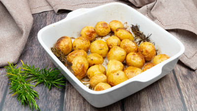

Tutte le Ricette
Scopri il nostro catalogo completo di piatti deliziosi e sani.
Filtra per Ingredienti (Includi)
Digita un ingrediente e premi Invio per aggiungerlo:
Caratteristiche Dietetiche
Vegetariano
Vegano
Senza Glutine
Senza Lattosio
Difficoltà massima
Tutte
Facile ★
Media ★★
Difficile ★★★
